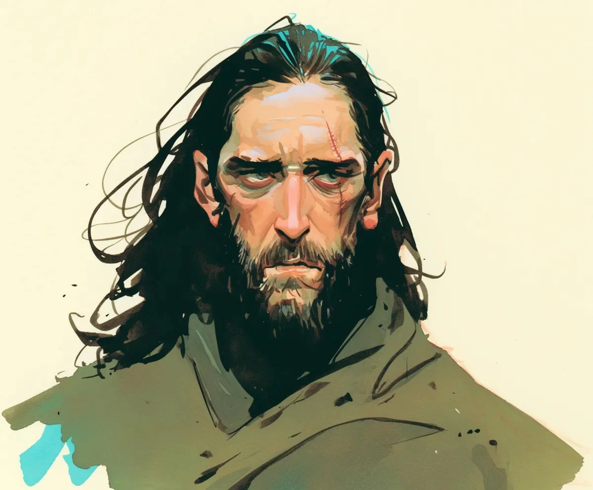

에즈라는 덥수룩한 수염을 긁었다. 벙커 생활 5년 차에 생긴 특유의 가려움이 문명이 완강하게 붕괴를 거부함에도 불구하고 여전히 지속되고 있었다.
[Ezra scratched at his matted beard, the particular itch that had developed during year five of bunker living still persisting despite civilization’s stubborn refusal to collapse.]
24시간 약국의 형광등은 미치도록 끈질기게 윙윙거렸고, 그는 지금쯤 희귀한 보물이 되었어야 할 일상적인 약들로 가득 찬 선반을 눈을 찡그리며 바라보았다. 2020년 4월 25일, 그가 예언했던 원래의 종말 날짜에 의식적인 정확함으로 자신의 이마에 새긴 흉터가 인공 조명 아래에서 욱신거렸다. 이제 그것은 한때 그의 교단이 숭배했던 “선택받은 자의 표식"이 아닌, 망상의 부끄러운 유물에 불과했다.
[The fluorescent lights of the 24-hour pharmacy buzzed with maddening persistence as he squinted at shelves stocked with the same everyday medicines that should have become extinct treasures by now. His forehead scar—self-carved with ritualistic precision on April 25, 2020, the original date of his prophesied apocalypse—throbbed beneath the artificial light, now merely an embarrassing relic of delusion rather than "The Mark of the Chosen” his congregation once revered.]
“선생님, 이걸로는 계산할 수 없어요,” 약사가 말했다. 플라스틱 이름표(“브렌다”)와 완벽한 보라색 매니큐어를 한 그녀는 에즈라가 쓸려나갈 것이라고 예언했던 모든 것을 대표하고 있었다.
[“Sir, you can’t pay with these,” said the pharmacist, a woman whose plastic name tag (“Brenda”) and immaculate purple nail polish represented everything Ezra had prophesied would be swept away.]
그녀는 에즈라가 조심스럽게 모아둔 2020년 이전의 은화 컬렉션을 라미네이트 카운터 위로 다시 밀어냈다. 그녀의 보라색 매니큐어는 이미 몇 년 전에 꺼졌어야 할 조명 아래에서 조롱하듯 반짝였다.
[She slid his carefully hoarded collection of pre-2020 silver dollars back across the laminate counter, her purple nail polish gleaming mockingly under the lights that should have gone dark years ago.]
“그리고 이것들로도… 뭐든 간에 계산할 수 없어요.” 그녀는 아직 잉크가 약간 젖어 있는 그의 손으로 그린 “종말 후 화폐"를 손가락으로 찔렀다. 에즈라는 익숙한 존재를 감지하고 돌아보니 두 사람이 줄을 서서 기다리고 있었다. 그들의 얼굴을 보자마자 즉시 알아보았다—헨더슨 부부, 한때 그의 가장 열렬한 추종자로 그들의 퇴직 계좌를 그의 "생존 기금"에 쏟아부었던 사람들이었다.
["And you definitely can’t pay with… whatever these are.” She poked at his hand-drawn “post-apocalypse currency,” the ink still slightly damp. Ezra sensed a familiar presence and turned to find two people waiting in line, their faces triggering an immediate flash of recognition—the Hendersons, once his most fervent followers who’d emptied their retirement accounts into his “Survival Fund.”]
“달러의 붕괴는 단지 지연된 것일 뿐, 피할 수 없는 겁니다,” 에즈라는 중얼거렸다. 5년 동안 자신과 애완 바퀴벌레에게만 말을 해온 탓에 그의 목소리는 녹슬어 있었다. 약국의 소독약 냄새는 그의 부은 턱에서 여전히 풍겨 나오는 강한 마늘 냄새와 충돌했다. 실패한 치료법들이 후각적 유령처럼 그를 따라다녔다.
[“The dollar’s collapse is merely delayed, not averted,” Ezra muttered, his voice rusty from five years of speaking only to himself and his pet cockroaches. The antiseptic smell of the pharmacy clashed with the pungent garlic odor still emanating from his swollen jaw, his failed remedies following him like an olfactory ghost.]
“저는 디지털 광고판에서 불이 비처럼 내리고 네 명의 기수가 쇼핑몰 주차장을 가로지르는 환상을 봤습니다. 위성들이 떨어지면—”
[“I’ve seen visions of fire raining from digital billboards and the four horsemen riding through strip mall parking lots. When the satellites fall—”]
“이봐요, 무일푼 예언자님,” 브렌다가 말을 끊었다. 그녀의 인내심은 에즈라가 비축해 둔 생수처럼 눈에 띄게 증발하고 있었다. 그 별명에 에즈라의 얼굴이 일그러졌다—한때 존경받던 “깨달은 자 예언자 에즈라"라는 칭호가 조롱당하는 것에 상처받으면서도 동시에 그 고통스러운 정확성에 충격을 받았다.
["Look, Prophet Penniless,” Brenda interrupted, her patience visibly evaporating like the bottled water Ezra had stockpiled. At the nickname, Ezra’s face twisted—both wounded by the mockery of his once-revered title “Prophet Ezra the Enlightened” and struck by its painful accuracy.]
“계절 한정 호박 스파이스 라떼의 종말을 예언했든 말든 상관없어요. 실제 돈으로 계산하거나 아니면 당신의 종말론 일기장을 다른 곳으로 가져가세요.” 그녀는 그의 주머니에서 삐져나온 낡은 노트북을 의미심장하게 쳐다보았다. 그 가장자리는 종말론적 계산들로 닳아 있었다. 그녀는 그가 사지 못한 항생제를 — 야생 마늘 찜질로 오히려 더 악화된, 이제는 너무 부어버려서 차라리 세상의 종말이 나아 보일 정도인 그의 감염된 이를 치료하기 위해 필요했던 약을 — 무심하게 서랍에 툭 던져 넣었다.
[“I don’t care if you’ve predicted the end of seasonal pumpkin spice lattes. Either pay with actual money or take your doomsday journal somewhere else.” She glanced pointedly at the worn notebook protruding from his pocket, its edges frayed with apocalyptic calculations. She tossed his unpurchased antibiotics—needed for the infected tooth that his wild garlic poultices had only made worse, now swollen to the point that even doomsday seemed preferable—back into a drawer with a dismissive thud.]
그는 끈질기게 평범한 4월의 오후로 비틀거리며 나갔다. 그의 전 추종자들은 길에서 그를 지나치며 눈을 마주치지 않았다. 그들이 스마트워치를 부끄럽게 힐끔거리는 모습은 종말이 그들 모두를 홀대했다는 것을 상기시켰다.
[He shuffled outside into the relentlessly ordinary April afternoon. His former followers avoided eye contact as they passed him on the street, their embarrassed glances at their smartwatches a reminder that the apocalypse had ghosted them all.]
에즈라는 이마의 흉터를 손가락으로 만지작거리며, 잠시 동안 아마도 진짜 재앙은 내내 자신의 내면에 있었던 것은 아닐까 하고 생각했다. 그러나 곧 단호하게 하늘을 올려다보며 떨어지는 위성이 있는지 확인했다.
[Ezra fingered the scar on his forehead and, for just a moment, wondered if perhaps the real catastrophe had been inside him all along, before resolutely checking the sky for falling satellites.]